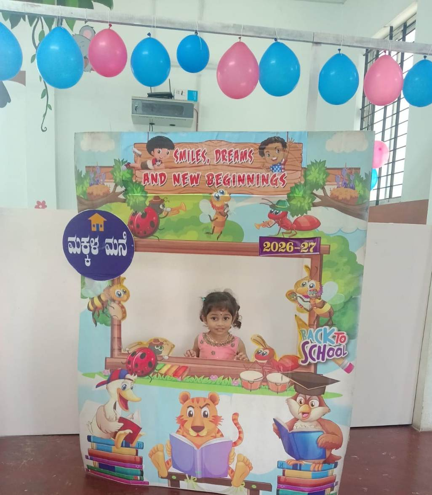

Where childhood is celebrated every day.
A warm, safe and stimulating environment where children are encouraged to learn, explore, express themselves and grow with confidence.
🌱 Makkala Mane
A nurturing initiative of
Pranathi Educational and Charitable Trust (R)

A happy beginning for a bright future.
Makkala Mane is a preschool and daycare designed around the needs of young children. Our approach combines playful experiences, age-appropriate learning and caring relationships to help children take their first confident steps into the world of education.
We believe children learn best when they feel safe, valued and excited to explore.
Care, curiosity and joyful learning.
Safe & Caring
A welcoming environment where children can feel secure and comfortable.
Learn Through Play
Hands-on experiences that turn everyday moments into opportunities to learn.
Curiosity First
We encourage children to ask, explore, imagine and express themselves.
Personal Attention
We value every child's individual pace, interests and personality.
Our Vision
To give every child a joyful beginning where confidence, curiosity and kindness can grow.
Our Philosophy
Children learn naturally through meaningful experiences, relationships, play and encouragement.
Our Environment
A welcoming space where children can feel comfortable, participate freely and discover at their own pace.